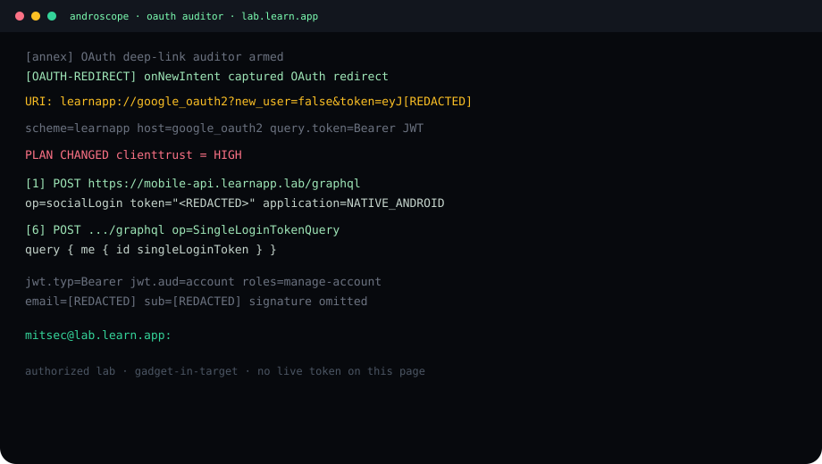
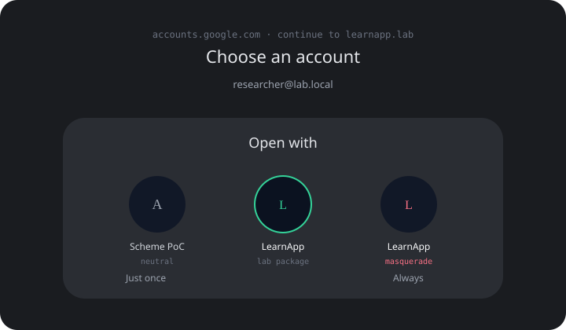
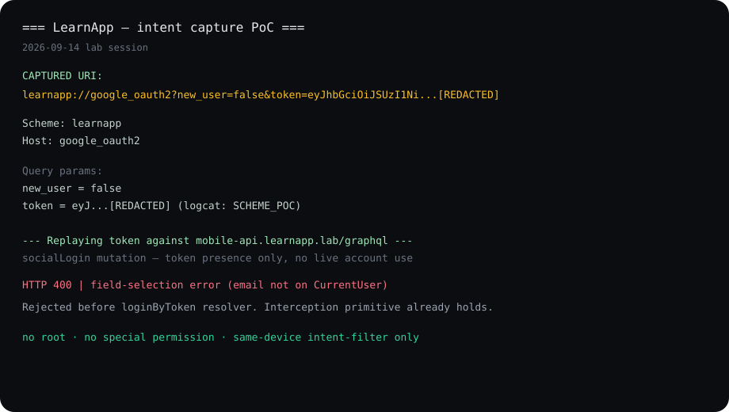
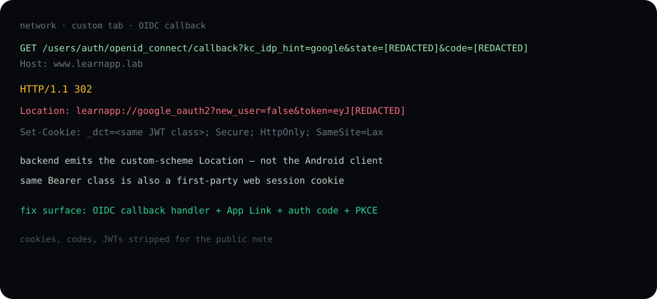

Summary
A public Android client I call com.learn.app finishes “Sign in with Google” by returning into the app on an unverified custom scheme: learnapp://google_oauth2. The redirect is not assembled by the APK. The lab IdP callback on www.learnapp.lab answers the OIDC code exchange with HTTP 302 and a Location header that already contains a full Bearer JWT in the query string.
Android does not prove who owns a custom scheme. A second package on the same device can register the identical intent-filter. When the Custom Tab hands the URI to the OS, the resolver shows “Open with…”. Pick the second app and the token is yours. No root. No special permission. No injection into the real process — that last path was only used as a second camera on the same URI.
Lab frame
Target label on the operator prompt: LearnApp_163.0.0. Mode: rootless, gadget-in-target. Package and hosts below are stand-ins. Original program identifiers, researcher mailbox, and every JWT are redacted.

Root cause
Android has two ways to land an external redirect:
- Custom scheme (
learnapp://…) — any installed app may claim it. Ownership is not verified. Collision produces a chooser. - App Link (
https://+autoVerify+assetlinks.json) — domain ownership is checked at install. No chooser.
This client used option 1. Three independent views of the same fact:
- AndroScope hook on the genuine lab process:
onNewIntentloggedlearnapp://google_oauth2?token=eyJ[REDACTED]. - A separate PoC APK with the same filter received the same Intent on an unrooted phone.
- Raw HTTP from the Custom Tab: the site itself emitted that Location header.
Chooser
Neutral PoC labelled “Scheme PoC”. Second variant used the same display name as the lab app, different applicationId. The dialog then offered two icons both called LearnApp. Label is not a control.


Manifest shape on the PoC (scheme and host are the lab stand-ins):
What the JWT was
Header and payload class only. Signature and every identifying claim are omitted.
typ: Bearer,aud: account- IdP: lab realm on
auth.learnapp.lab - Roles observed in class:
manage-account,manage-account-links,view-profile - Scope class:
openid email profileplus vendor user-id claims preferred_username/email— redacted
This is a general-purpose account credential, not a one-shot mobile code.
Network — the 302

Request class:
GET https://www.learnapp.lab/users/auth/openid_connect/callback?kc_idp_hint=google&state=[REDACTED]&code=[REDACTED]
Response class:
302 Location: learnapp://google_oauth2?new_user=false&token=eyJ[REDACTED]
The Android client does not choose that URI. The callback handler does. A manifest-only patch is incomplete.
How the app spends the token
Same session, AndroScope RN / HTTP recorder, after the redirect landed in the real package:
POST mobile-api.learnapp.lab/graphql—socialLoginwith the JWT andapplication: NATIVE_ANDROIDSingleLoginTokenQuery—me { id singleLoginToken }- Dashboard / XP queries under that session
PoC replay against the same mutation used a field that is not on CurrentUser (email). GraphQL answered 400 at schema validation, before the resolver that would accept or reject the token. That response does not prove or disprove token acceptance. The interception primitive does not depend on it. A minimal me { id } query is the private follow-up, not a public kit.
Impact (class)
- Full-scope Bearer travels only on an unverified scheme.
- Any app on the device can register the filter and sit in the chooser.
- Masquerade removes the last user-visible distinction.
- Holder of the JWT can call
socialLoginand inherit the mobile session — pending the private resolver check.
Fix
- Change the OIDC callback so
Locationis anhttps://App Link. Publishassetlinks.json. Setandroid:autoVerify="true". - Stop putting a long-lived Bearer in a URI query. Return a one-time authorization code. Exchange it over HTTPS. PKCE S256 on that code.
- If a custom scheme must remain for old builds, bind the redirect to a value only the real app can prove — and still migrate.
What this page is not
- Not the PoC APK, Gradle tree, or masquerade resources.
- Not a live token, cookie, or mailbox.
- Not a packing guide. AndroScope here is the camera: intent hook, RN bridge spy, HTTP recorder.
Environment class: Android 13-class unrooted device, production-track lab build, Frida gadget via the operator console, Custom Tab for the Google leg.